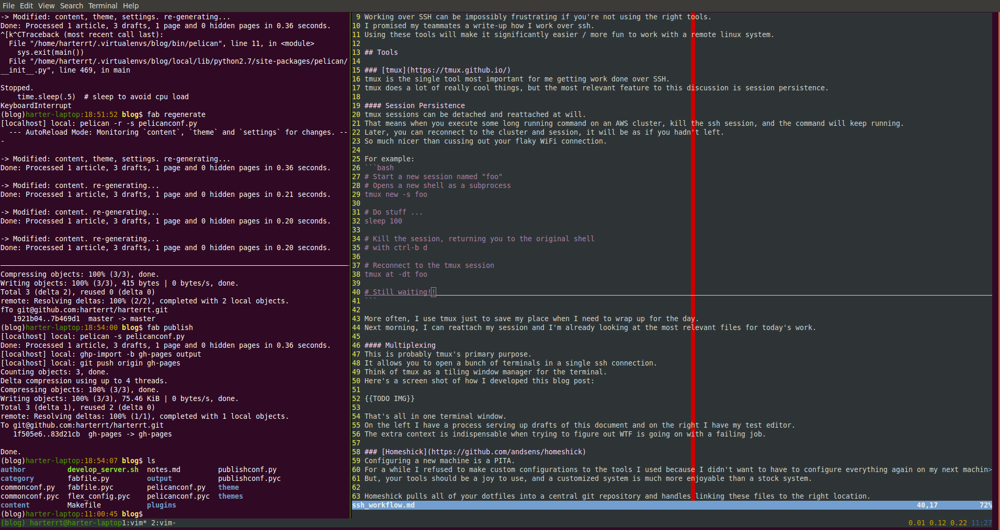

Working over SSH
Posted on Mon 05 September 2016 in mozilla
Introduction
Working over SSH can be impossibly frustrating if you're not using the right tools. I promised my teammates a write-up how I work over ssh. Using these tools will make it significantly easier / more fun to work with a remote linux system.
Tools
tmux
tmux is the single tool most important for me getting work done over SSH. tmux does a lot of really cool things, but the most relevant feature to this discussion is session persistence.
Session Persistence
tmux sessions can be detached and reattached at will. That means when you execute some long running command on an AWS cluster, kill the ssh session, and the command will keep running. Later, you can reconnect to the cluster and session, it will be as if you hadn't left. So much nicer than cussing out your flaky WiFi connection.
For example:
# Start a new session named "foo" # Opens a new shell as a subprocess tmux new -s foo # Do stuff ... sleep 100 # Kill the session, returning you to the original shell # with ctrl-b d # Reconnect to the tmux session tmux at -dt foo # Still waiting!!
More often, I use tmux just to save my place when I need to wrap up for the day. Next morning, I can reattach my session and I'm already looking at the most relevant files for today's work.
Multiplexing
This is probably tmux's primary purpose. It allows you to open a bunch of terminals in a single ssh connection. Think of tmux as a tiling window manager for the terminal. Here's a screen shot of how I developed this blog post:

That's all in one terminal window.
On the left I have a process serving up drafts of this document and on the right I have my text editor.
The extra context is indispensable when trying to figure out WTF is going on with a failing job.
For example, monitoring an sbt ~test process on the left while making edits on the right.
Homeshick
Configuring a new machine is a PITA. For a while, I saw all configuration changes as a liability and refused to customize my environment. After all, I'd eventually have to redo all of these configs when I get a new machine. Eventually, I relented. Your tools should be a joy to use, after all, and Homeshick makes this a non-issue.
Homeshick pulls all of your dotfiles into a central git repository and handles linking these files to the right location.
Now, I can boot up a new Ubuntu instance on AWS and feel at home within ~5 minutes.
When I connect to a machine for the first time, I grab this snippet and all of the initialization is done.
Even better, the meaningful config changes I make on my work machine magically materialize on my personal machine and VPS with a simple git pull.